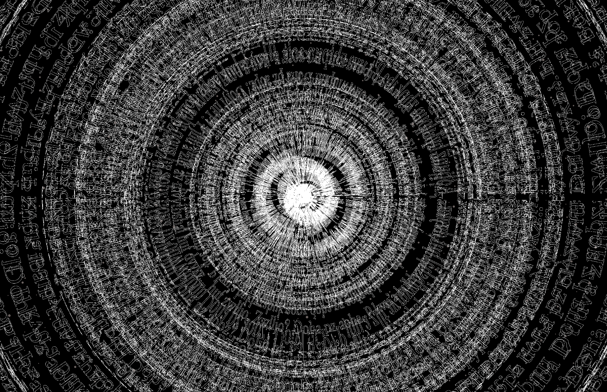
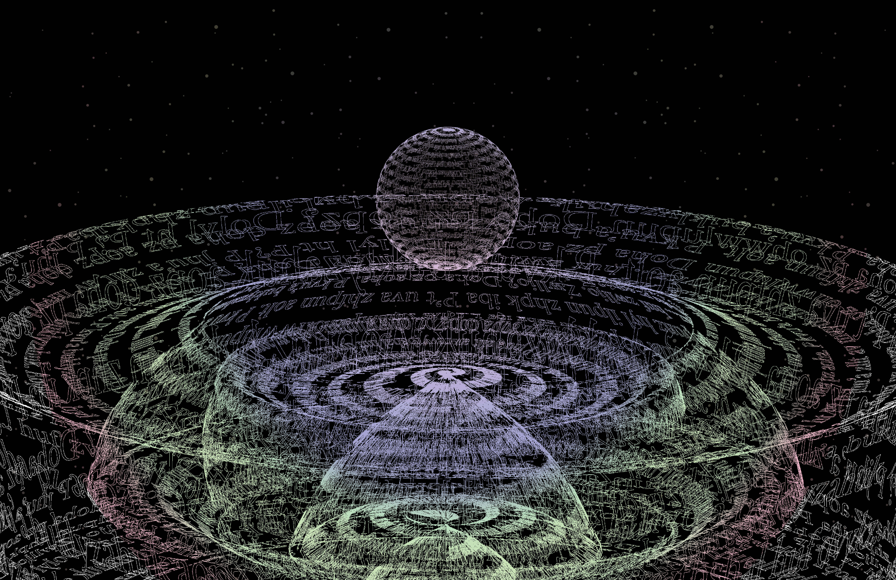

The Progression is a typographic bookwork about the creation of the Universe itself, told through a meta-narrative where the elements of the text itself become more & more realized as the story progresses. Our characters discuss various aspects of their yet- to-be-created reality, as the book slowly gains form around them: shifting from disjointed gibberish, to floating phrases, to a conventionally formatted book, save for certain attributes.
The story begins with several black pages, reflecting the emptiness of pre-existence. This is followed by the slow build-up of “stars”, before, suddenly, every inch of the page becomes covered in overlapping & overwhelming nonsensical words, showing reality in its earliest potential stages, before any sort of rules or physics been established. Soon after, a single voice finds clarity in the chaos—& the narrative commences.
The story was written & designed simultaneously, with each page’s typography specifically designed to reflect its written content: creating a blend between visual & literary storytelling.
Each of the three characters within the narrative is initially differentiated by shades of white & slight variations in typeface (Register, Fournier, & Bulmer). As the narrative progresses, a narrator joins in, & all characters begin speaking with register; becoming unified as they transition from speaking in disembodied phrases to properly formatted dialogue.
The text itself is set in white on black, to help provide a “space” theme, to help emphasize the creation of the universe itself. This project works to show the capabilities of expressive typesetting when placed in tandem with original writing; very simple & quiet page designs pair with overwhelming & complex spreads to create an engaging, visual narrative.
 The narrative concludes with more voices suddenly popping into reality, speaking out of turn & overtop of one another, disagreeing & agreeing all the same, until they finally come to a decision: to create the universe as we know it. This shift is reflected via a dramatic shift in the design: with the sudden appearance of
3D typographic structures & the sudden inclusion of color-giving the feeling that the confines of the book have been shattered, & reality has truly begun to form. These structures were created using the same gibberish from the start of the text, applied as a texture to a 3D shape created in Adobe Illustrator.